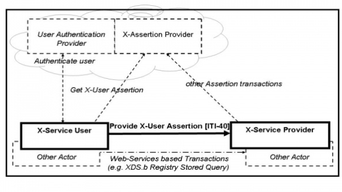

IHE IT Infrastructure (ITI)
Technical Framework
Revision 16.0 – Final Text
The Cross-Enterprise User Assertion Profile (XUA) provides a means to communicate claims about an authenticated principal (user, application, system...) in transactions that cross enterprise boundaries. To provide accountability in these cross-enterprise transactions there is a need to identify the requesting user in a way that enables the receiver to make access decisions and proper audit entries. The XUA Profile supports many solutions including enterprises that have chosen to have their own user directory with their own unique method of authenticating the users, and others that have chosen to use a third party to perform the authentication.
There are transactions defined by IHE that cross enterprise boundaries and are web-services based on ITI TF-2x: Appendix V. The existing IHE profiles for an authenticated user identity (IHE Enterprise User Authentication Profile ( EUA ) ) are not intended to function in cross-enterprise transactions. In a cross-enterprise environment it is more likely that the transactions will be going between two enterprises that maintain their own independent user directories (IHE Personnel White Pages [PWP]). This type of requirement is the focus of the Identity Federation standards. Identity Federation has received much attention by the security and the platforms industry. Identity Federation is agnostic to the type of user directory; it allows for a centralized user directory, but also supports the more powerful federation of user directories. Identity Federation supports:
The XUA Profile leverages Web-Services Security, SAML 2.0 Token Profile and the various profiles from W3C , and OASIS to support identity federation. In this way we will be able to take advantage of the vast experience of the communities outside of healthcare standards. This profile leverages the experience of programs around the globe that have started work with SAML in healthcare.
The XUA Profile supports complex environments, for example one where two different trust domains are operating under different technology, procedures, role-models, etc. They are cooperating in the XDS Affinity domain under an overarching trust relationship policy (See ITI TF-2x: Appendix L) that indicates that these differences can be rationalized. The XDS transactions are transferring control from one entity to another, for example, when using XDS to exchange data between a single doctor practice and large multi-site hospital. It is not likely that they will all agree to the same access control model (organizational roles, functional roles, workflows, permissions, etc.). It is not necessary to have the same access control across these entities, but it is reasonable that at the policy level they will agree to a set of processing rules. This illustrates an important fact that the XUA is useful for security audit logging, but is to a lesser extent useful for access controls.
The following is a list of use-cases that have been proposed for XUA. Some of these use-cases will not be supported due to lack of standards or sufficient guidance on the proper solution.
The vast majority of the use-cases (items 1-11) rely on claims about an authenticated identity, which a SAML 2.0 Identity Assertion can provide. This is a mature standard produced by OASIS. XUA Profile is focused on Web-Services transactions that follow ITI TF-2x: Appendix V. XUA specifies that when a Cross-Enterprise User Assertion is needed, these Web-Services transactions will additionally use the Web-Services Security header with a SAML 2.0 Token containing the identity Assertion. As with any IHE profile, the applications are not forbidden to use other methods of providing the principal (user) identity, providing that interoperability has been assured through some policy.
A very clear need on all the use-cases is the recording of the user identity in any security audit logs. The XUA Profile does not define these auditable events. The need to record a security audit event is driven by the grouped transactions (e.g., Registry Stored Query, and Retrieve Document Set). XUA does specify how to reference the Identity Assertion in an ATNA Audit Message.
The method of authenticating the principal (user) and the method that the X-Service User (e.g., XDS.b Document Consumer) uses to get the Identity Assertion are outside the scope of this profile.
There are principal (user) attributes that appear to be needed in the use-cases: Doctor, Patient, Guardian, Emergency-Access. The Identity Assertion can contain attributes about the principal (user). At this time it is not clear what standards to use to identify these attributes and their values, so this is left to specific implementations that have defined a local vocabulary or vocabulary translation.
The method used by the X-Service User (e.g., XDS.b Document Consumer) to determine the contents of the Identity Assertion is outside the scope of this profile. This might be accomplished using the SAML Metadata and WS-Policy.
It is expected that extending this solution to HL7 and DICOM will be supported in the future.
Figure 13.4-1 shows the actors directly (Bold and Solid Boxes) involved in the XUA Integration Profile and the relevant transactions between them (Bold and Solid Line). The diagram also shows ancillary actors (Dashed and Grey Boxes) that are not profiled but include interactions (Dashed and Grey Lines). Actors grouped with are shown as the dashed line between the X-Service User and the X-Service Provider.

Figure 13.4-1: Cross-Enterprise User Assertion Actor Diagram
Table 13.4-1 lists the transactions for each actor directly involved in the XUA Profile. The ancillary actors and associated transactions may be supported by various technologies and system configurations varying from internal shared services to infrastructures for identity management.
In order to claim support of this Integration Profile, an implementation must perform the required transactions (labeled “R”). Transactions labeled “O” are optional. A complete list of options defined by this Integration Profile and that implementations may choose to support is listed in Section 13.5.
Table 13.4-1: XUA - Actors and Transactions
|
Actor |
Transaction |
Optionality |
Section |
|
X-Service User |
Provide X-User Assertion [ITI-40] |
R |
|
|
X-Service Provider |
Provide X-User Assertion [ITI-40] |
R |
Options that may be selected for this Integration Profile are listed in Table 13.5-1 along with the a ctors to which they apply. Dependencies between options when applicable are specified in notes.
Table 13.5-1: XUA - Actors and Options
|
Option |
Vol. & Section |
|
|
X-Service User
|
Subject-Role |
ITI TF-1: 13.5.1 |
|
Authz-Consent |
ITI TF-1: 13.5.2 |
|
|
PurposeOfUse |
ITI TF-1: 13.5.3 |
|
|
X-Service Provider
|
Subject-Role |
ITI TF-1: 13.5.1 |
|
Authz-Consent |
ITI TF-1: 13.5.2 |
|
|
PurposeOfUse |
ITI TF-1: 13.5.3 |
Role-Based-Access Control is a common architecture for managing and enforcing authorizations. In this model users are assigned to roles, and permissions are assigned to these roles. In this way the administration of permissions to users is grouped through roles. In an RBAC model these roles are well known and agreed to between the system that is managing users and the access control system. Given that a Federated Identity environment allows for a loose coupling of the Identity-Manager and the Access Control point, there is a need to have a well-defined vocabulary for the roles. This set of roles will likely expand over time and will be extended with local codes into a Value-Set within any specific Security-Domain.
This option recommends that the Value-Set be derived from the role codes found in SNOMED-CT , ISO 21298, or ASTM E1986. The Value-Set used would bridge between different policy domain roles used in a client domain to those used in the service domain. In this way it is possible for local role definitions to be used as long as they can be bridged to the roles found in the selected Value-Set . Implementations should expect that the Value-Set used may be using locally defined values. The use of the IHE Sharing of Value-Sets (SVS) Profile may assist with this.
See ITI TF-2b: 3.40.4.1.2.1 and ITI TF-2b: 3.40.4.1.3.1 for transaction requirements.
There are transactions where the requester of the transaction knows of specific Consent/Authorization evidence that would enable that transaction. The identification could be used by the relying party Access Control engine as a hint. The Access Control engine could explicitly retrieve that specific object, validate that it is indeed a properly formed Consent/Authorization, and determine if that Consent/Authorization does indeed affect the Access Control decision.
This can be used where the requester had previously published Consent/Authorization evidence Document but where this new knowledge had not yet propagated fully to the Access Control infrastructure. This mechanism is also useful where the requester is under regulatory obligations to include evidence of Consent/Authorization on each transaction. When this Option is used in conjunction with the Basic Patient Privacy Consents ( BPPC ) Profile this would allow for the requester to include in the XUA Assertion identification of a newly published BPPC Document. This option leverages the BPPC consent model.
See ITI TF-2b: 3.40.4.1.2.2 and ITI TF-2b: 3.40.4.1.3.2 for transaction requirements.
As explained in the IHE Access Control White Paper , there are Access Control decisions that are based on the ultimate use of the data. For example , a Patient may have provided a BPPC Consent/Authorization for treatment purposes, but explicitly disallowed any use for research regardless of de-identification methods used. The purpose of use is also informative to the ATNA audit log to enable specific reporting of Accounting of Disclosures and Breach Notification. To enable this type of Audit Logging and Access Control decision there is a need to include in the XUA Assertion the intended purpose for which the data will be used. One specific purpose of use would be a Break-Glass / Emergency-Mode-Access.
This option recommends that the Value-Set be derived from the codes found in ISO 14265, or XSPA. Implementations should expect that the Value-Set used may be using locally defined values. The use of the IHE Sharing of Value-Sets (SVS) Profile may assist with this.
See ITI TF-2b: 3.40.4.1.2.3 and ITI TF-2b: 3.40.4.1.3.3 for transaction requirements.
The X-Identity Assertion is valuable and must be protected against confidentiality risks. In some Profiles (e.g., XDS), there is already an inherited requirement to group with ATNA Secure Node or Secure Application Actor. This grouping forces the network transactions to utilize mutually authenticated and encrypted TLS or equivalent. This is leveraged by XUA to support the protection of the X-User Assertion to some risks to confidentiality and integrity. When ATNA Secure Node or Secure Application grouping is not required, there will need to be some other mechanism to protect the Provide X-User Assertion.
ITI TF-2b: 3.40.4.2 includes encoding rules for representing an X-User Assertion in an ATNA Audit Message.
When an XDS.b Document Consumer is grouped with X-Service User Actor, the XDS.b Document Consumer shall conform to all the requirements in the Provide X-User Assertion Transaction. The Document Consumer will obtain a properly scoped XUA Assertion targeted for the XDS.b Document Registry or XDS.b Document Repository. The method used may be through internal means, SAML 2.0 Core protocols, WS-Trust, or any other means.
The XDS.b Document Registry and XDS.b Document Repository when grouped with the XUA X-Service Provider shall conform to all the requirements in the Provide X-User Assertion Transaction. The XUA Profile does not constrain how the Assertion can be used (e.g., ignored, access control, etc.).
An application that groups EUA and XUA Actors may use WS-Trust to get the X-User Assertion from the Security Token Service (STS). In this case the AuthnContextClassRef element of the SAML assertion shall be:
urn:oasis:names:tc:SAML:2.0:ac:classes:Kerberos
This conversion from one security token format to another is documented in the WS-Trust standard, and not further profiled by IHE.
Any a ctor that uses Web-Services according to ITI TF-2x: Appendix V may be grouped with the appropriate XUA Actors. The a ctor grouped with X-Service User Actor, the Requesting Actor, shall conform to all the requirements in the Provide X-User Assertion Transaction. The method used may be through internal means, SAML 2.0 Core protocols, WS-Trust, or any other means. The actor grouped with the X-Service Provider shall conform to all the requirements in the Provide X-User Assertion Transaction. The XUA Profile does not constrain how the Assertion can be used (e.g., ignored, access control, etc.).
Figure 13.7-1: Cross-Enterprise User Assertion Process Flow
In the above flow we are showing more actors than are specified in this profile. This is a diagram showing a possible grouping with IHE-EUA (User Authentication Provider), IHE-PWP (User Directory Provider), and a SAML Identity Provider (X-Assertion Provider). The User Authentication Provider, User Directory Provider and X-Assertion Provider are not profiled here, but rather are shown to give a context to the XUA transactions.
In this figure the dark lines represent the X-User Assertion transaction. The dashed lines represent other standards - based transactions that may be used. Web-Services session A and B show an example where one X-User Assertion is used to cover two Web-Services transactions, where Web-Services Session C is using a different X-User Assertion. This may be due to a different user, timeout of the previous X-User Assertion, or some other reason.
The security risk assessment for XUA enumerates assets, threats, and mitigations. The security risk assessment for the Actors that are grouped with the XUA Actors are out of scope of the XUA Profile (e.g., an XDS Document Consumers performing Registry Stored Query and Retrieve Document Set. P lease refer to the Security Considerations for those transaction s). The complete risk data are stored and available from IHE. The purpose of this risk assessment is to notify vendors and healthcare providers of some of the risks that they are advised to consider in implementing XUA Actors. For general IHE risks and threats, please see ITI TF-1: Appendix L. The vendor is also advised that many risks cannot be mitigated by the IHE profile and instead responsibility for mitigation is transferred to the vendor, and occasionally to the affinity domains, individual enterprises and implementers. In these instances, IHE fulfills its responsibility to notify affected parties through the use of the following sections.